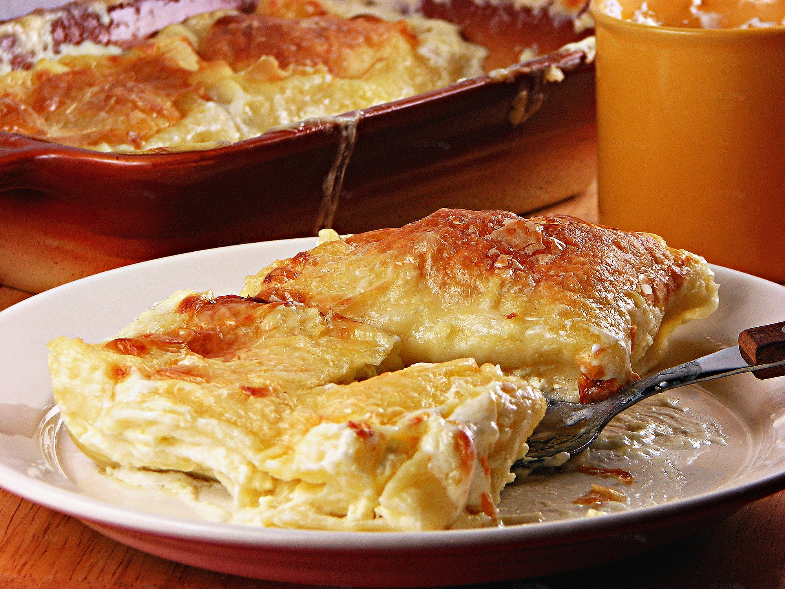

Štrukli

Sastojci
- 500 g brašna
- 500 g svježeg sira
- 3 jaja
- 200 ml vrhnja
Priprema
- Zamijesite tijesto i razvucite ga tanko.
- Rasporedite nadjev od sira, jaja i vrhnja.
- Urolajte, narežite i složite u posudu.
- Pecite na 200 °C dok ne porumene.
